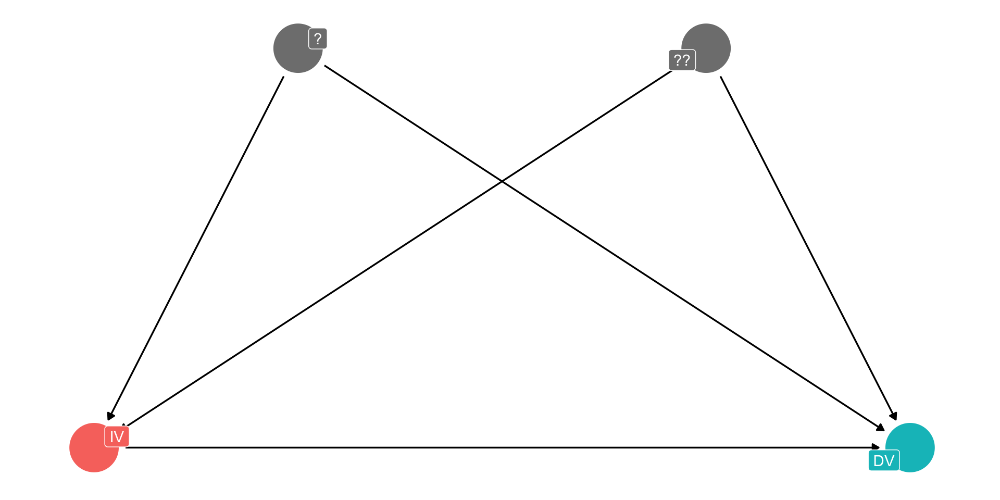
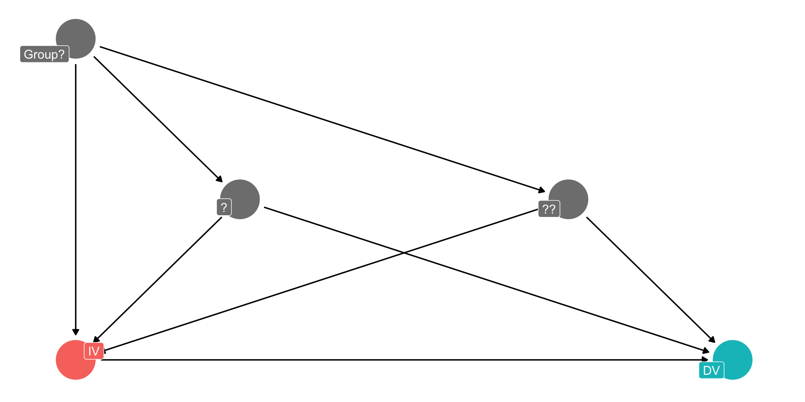
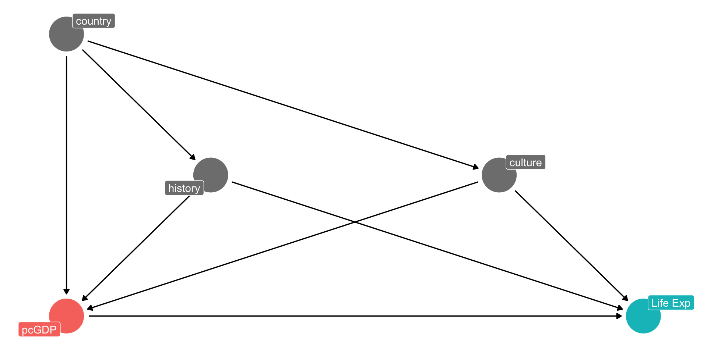

W13L2: Advanced Fixed Effects
POLS 642 Intermediate Analysis of Political Data
Plan for Today
1) “Bell Ringer”
2) Fixed Effects Review
3) FEs and CEs
4) Two-Way Fixed Effects
5) FEs and Logits
6) Random Effects
7) Multilevel Modeling
Packages
Bell-Ringer
Let’s say I am studying the drivers of support for President Trump using ANES survey data from the 2016, 2020, and 2024 election waves. My hypothesis is that individuals who believe the country has “gone too far” in trying to pursue gender equality will be more likely to vote for Trump, even after controlling for standard political ideology and partisanship. Should I use fixed effects in this analysis? Over what grouping?
Fixed Effects
What Do We Do?

Good practices
provide a theoretical discussion of what these sources of unmeasured confoundingness might be
maybe conduct a “sensitivity analysis” that can measure how strong the confounding relationships would have to be to overturn your finding
Or…
What if?

The Logic of Fixed Effects
If you have grouped data…
Those groups are likely correlated with confounding variables
By controlling for the group (as a categorical variable), you control for all potentially confounding variables that are correlated with the group
Applied to GDP/Life Expectancy

What kinds of groups?
governmental units (countries)
time (years)
survey waves
any nested structure
“two-way fixed effects” : both a grouping and a time FE
How it works
you just add the group unit to your model like a categorical variable
OR you re-calculate your X and Y variables as differences from the group mean
you can do this manually with
lm()or you can use a special package for fixed effects
Different Intercepts, Same Slope

In Practice
Pooled Model
gm <- gapminder
Model0 <- lm(lifeExp~log(gdpPercap), data = gapminder)
modelsummary(Model0, stars= T, gof_map = c("nobs","r.squared"), coef_map = c("log(gdpPercap)" = "GDP per capita (ln)"))| (1) | |
|---|---|
| + p < 0.1, * p < 0.05, ** p < 0.01, *** p < 0.001 | |
| GDP per capita (ln) | 8.405*** |
| (0.149) | |
| Num.Obs. | 1704 |
| R2 | 0.652 |
Fixed Effects as Diffs from Group Mean
gm <- gm %>%
group_by(country) %>%
mutate(lifeExp_within = lifeExp-mean(lifeExp),
log_gdpPercap_groupmean = mean(log(gdpPercap)),
log_gdpPercap_within = log(gdpPercap) - mean(log(gdpPercap)))
Model1 <- lm(lifeExp_within ~ log_gdpPercap_within, data = gm)
modelsummary(list("Pooled" = Model0, "Absorbed FE" = Model1), stars= T, gof_map = c("nobs","r.squared"), coef_map = c("log(gdpPercap)" = "GDP per capita (ln)", "log_gdpPercap_within"= "GDP per capita (ln)"))| Pooled | Absorbed FE | |
|---|---|---|
| + p < 0.1, * p < 0.05, ** p < 0.01, *** p < 0.001 | ||
| GDP per capita (ln) | 8.405*** | 9.769*** |
| (0.149) | (0.284) | |
| Num.Obs. | 1704 | 1704 |
| R2 | 0.652 | 0.410 |
Fixed Effects as Dummies
Model2 <- lm(lifeExp~log(gdpPercap) + factor(country), data = gapminder)
modelsummary(list("Pooled" = Model0, "Absorbed" = Model1, "FE Dums" = Model2), stars= T, gof_map = c("nobs","r.squared"), coef_map = c("log(gdpPercap)" = "GDP per capita (ln)", "log_gdpPercap_within"= "GDP per capita (ln)"))| Pooled | Absorbed | FE Dums | |
|---|---|---|---|
| + p < 0.1, * p < 0.05, ** p < 0.01, *** p < 0.001 | |||
| GDP per capita (ln) | 8.405*** | 9.769*** | 9.769*** |
| (0.149) | (0.284) | (0.297) | |
| Num.Obs. | 1704 | 1704 | 1704 |
| R2 | 0.652 | 0.410 | 0.846 |
Fixed Effects with a Package
Model3 <- feols(lifeExp~log(gdpPercap) | country , data = gapminder)
modelsummary(list("Pooled" = Model0, "Absorbed" = Model1, "FE Dums" = Model2, "Fixest" = Model3), stars= T, gof_map = c("nobs","r.squared"), coef_map = c("log(gdpPercap)" = "GDP per capita (ln)", "log_gdpPercap_within"= "GDP per capita (ln)"))| Pooled | Absorbed | FE Dums | Fixest | |
|---|---|---|---|---|
| + p < 0.1, * p < 0.05, ** p < 0.01, *** p < 0.001 | ||||
| GDP per capita (ln) | 8.405*** | 9.769*** | 9.769*** | 9.769*** |
| (0.149) | (0.284) | (0.297) | (0.702) | |
| Num.Obs. | 1704 | 1704 | 1704 | 1704 |
| R2 | 0.652 | 0.410 | 0.846 | 0.846 |
Meaning of Within-Group Comparisons
FEs change our interpretation to one of within-group associations
e.g. “Within each country, years with higher GDPs have higher life expectancies”
NOT “Countries with higher GDPs have higher life expectancies”
Benefits and Costs
Fixed effects allows you to control for confounding factors that are correlated with groups within the data for which you have multiple observations
It’s a powerful tools for mitigating the risk of omitted variable bias
However, we are no longer looking at cross-group comparisons
We need variation on all of our variables within each group, can result in loss of observations
Two-Way Fixed Effects
Two-way Fixed Effects
what if you have repeated measures within groups at common time intervals? (panel data)
you can have fixed effects for both group and time
probably should start using a special package at this point…
TWFE in practice
Model4 <- feols(lifeExp~log(gdpPercap) | country + year, data = gapminder)
modelsummary(list("Pooled" = Model0, "Absorbed" = Model1, "FE Dums" = Model2, "Fixest" = Model3, "TWFE" = Model4), stars= T, gof_map = c("nobs","r.squared"), coef_map = c("log(gdpPercap)" = "GDP per capita (ln)", "log_gdpPercap_within"= "GDP per capita (ln)"))| Pooled | Absorbed | FE Dums | Fixest | TWFE | |
|---|---|---|---|---|---|
| + p < 0.1, * p < 0.05, ** p < 0.01, *** p < 0.001 | |||||
| GDP per capita (ln) | 8.405*** | 9.769*** | 9.769*** | 9.769*** | 1.450* |
| (0.149) | (0.284) | (0.297) | (0.702) | (0.679) | |
| Num.Obs. | 1704 | 1704 | 1704 | 1704 | 1704 |
| R2 | 0.652 | 0.410 | 0.846 | 0.846 | 0.936 |
Fixed Effects and Clustered Errors
Standard Wisdom
You should always cluster your errors on the groups for which you are including fixed effects
If you think there are unmeasured confounding variables that are correlated with groups, that almost certainly implies that your errors will be correlated within groups
The Effect Textbook
NHK says not so fast! There are specific assumptions that need to be met for clustered standard errors to be appropriate
But in practice, I think your default should be to cluster unless you are really confident that those assumptions are not met
Clustered Errors in TWFE
which group do you cluster on?
Dr. M. Clark : on the time variable!
Dr. C Thurber: on the grouping variable!
the right answer: both?
Random Effects
When and why random effects?
fixed effects results in lost data or large SEs when there’s little within-group variation
Random effects models set intercepts for each group based on assumption that they all come from the same random distribution
But it assumes that the group intercepts are unrelated to the X variables (?!?)
When we might use
experiment in which we randomly assign students within a number of different schools to a certain educational intervention
we might think certain schools have unmeasured characteristics that make test scores systematically higher or lower
using random effect might be more efficient than fixed effects (?)
Advanced Random Effects
what to do when you think the grouping ARE correlated with the X variables?
correlational random effects
hierarchical linear models
Correlational random effects
calculate group means and differences from group means
run a regression with the normal dependent variable, group mean, differences from group mean and random effects
can interpret coefficient for group means as between group effect and coefficient for difference from group mean as within group effect
Hierarchical Linear Models
we can come up with a regression equation for within group variation as well as a regression equation for between group variation
can therefore have different slopes for each group (almost like interaction fixed effects?)
can get very complicated
Dr. A Clark uses a lot in her survey work, I think
Conclusion
fixed effects can be simple and intuitive in their most basic form, and are a powerful way to model for unobserved confounders
can also get very complicated very fast if we want to try to start modeling within-group and between-group variation differently
My best advice is to always start by looking at how other scholars looking at the same or a similar DV have gone about modeling it.